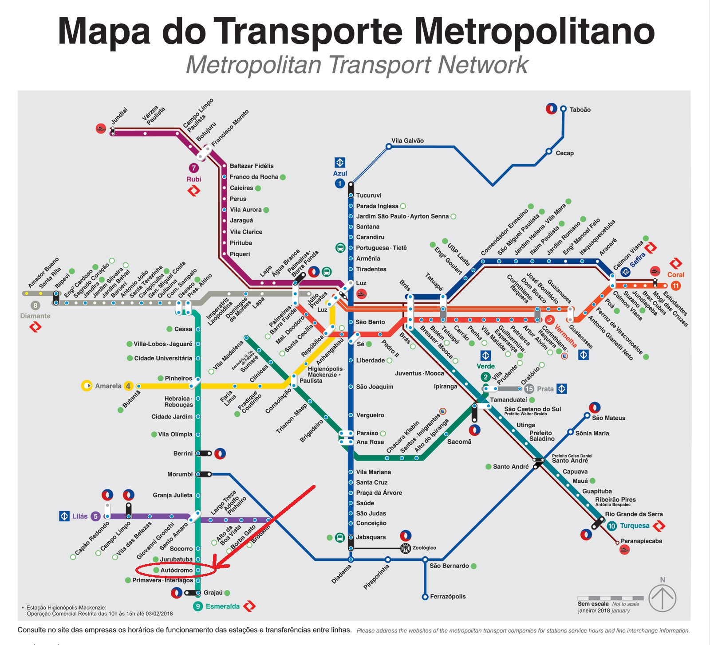
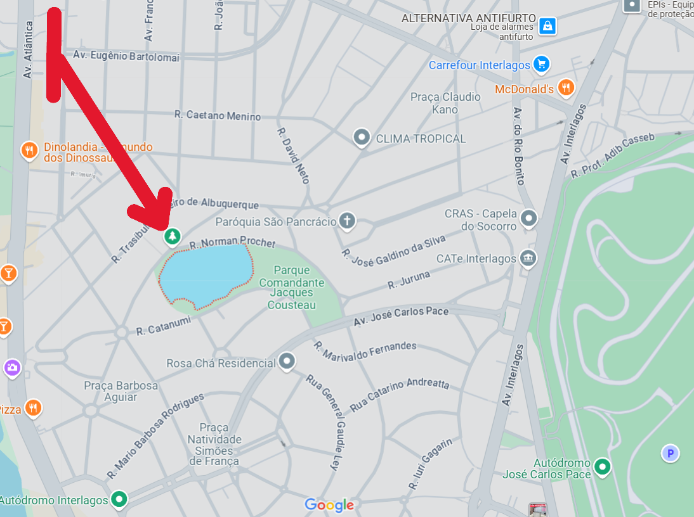

Opção 1 (preferível): De trem através da estação Autódromo.
Como Chegar
Opção 2: De carro até a estação Jurubatura, e de trem até a estação Autódromo.
Opção 3 (menos preferível): De carro até a região do Autódromo.
Telefones Úteis
SAMU: 192
Polícia: 190
Bombeiros: 193